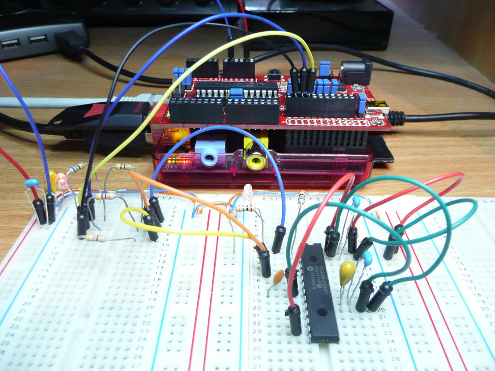
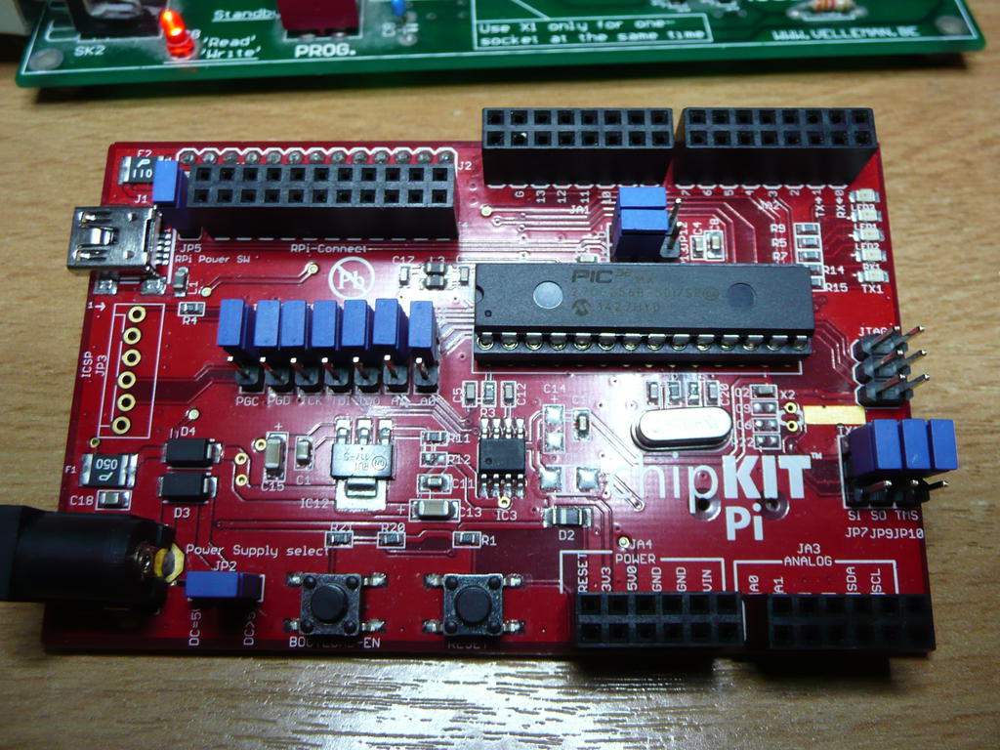
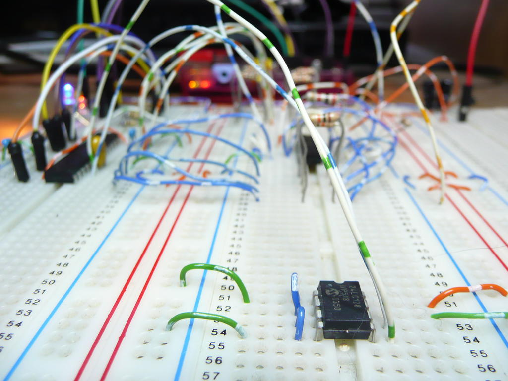
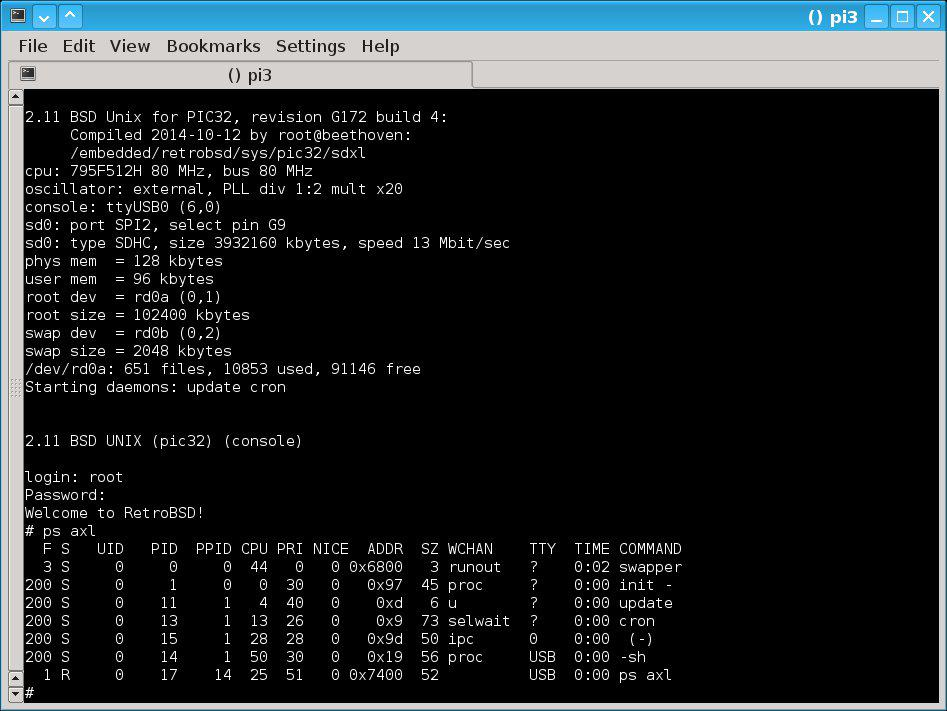

PIC24FJ connected to a R-PI.
The application found here (k8048) has been written to allow programming of PICMicro devices in FreeBSD, NetBSD, Linux, Cygwin (Windows) and MACOS/X or any UNIX/POSIX based system, which includes the Raspberry Pi and embedded devices running OpenWRT.
All systems support high voltage programming (HVP) of PICMicros with the Velleman K8048 or K8076 kits, however, other high voltage programming kits and circuits may be supported by adjustment of the I/O rules.
Support is also available to program low voltage programming (LVP) compatible PICMicros directly from a Raspberry Pi, OpenWRT enabled router or a USB UART adapter. Look for devices marked LVP(PGM) or LVP(KEY) in the supported PIC devices list.
Please refer to the Microchip documentation for your device as to whether it supports high voltage (HVP) or low voltage (LVP) programming or both.
Currently supported PICMicro devices range from the PIC10 to the PIC32 but generally only devices in DIP format have been tested. This program may or may not support your device in another package type and your feedback is welcome should you gain success with this application.
In order to use this program in Windows Cygwin you must first install and setup Cygwin including the necessary development tools for building the application. See Appendix A for details.
Before you download and use this application you should read the LICENSE found here. This license details the rights and liabilities of using the application and it should be especially understood that I, the author, will not accept any responsibility for any side effects of running it. IE. Do not download and run this program unless you are willing to accept the consequences of it failing for any reason.

A PIC10F220 connected via ICSP.

A PIC18F4550 connected via ICSP.

A PIC16F648A connected via ICSP.
Darron M Broad < darron at kewl dot org >
Table of contents

Proton MKII ICSP.
This application was written by Darron M Broad in 2005, 2007, 2012, 2013 and 2014 and is an ongoing effort.
Thanks go to Ian Stoyle who supplied a patch which added support for the 16F84 device which does not have a device id within it's configuration. This patch was the origin of the feature to override the device probe and instead supply the device name of the target.
Kristoffer Myskja reported that he had great success with the Velleman K8048 on a laptop without serial I/O by using a cardbus serial interface. This is probably the best option for a laptop without a UART.
Johan Ahlander notified me that the application worked fine in NetBSD.
Working with keen linux user and PIC coder Paul Van Gelder I added support for the Velleman K8076 kit and 16F84A PICMicro. Thanks Paul! To use the application with the Velleman K8076 see the BITRULES option for the dot file below.
Many thanks to Chaitanya Rogers who donated money toward development and to acquire new PICmicros. All the PICMicros acquired with that donation are now supported, thank you.
Thank you Josef Larsson for reporting that the 16F690 is compatible with this application using ICSP. This device may also be used in the Velleman K8048 14P socket with pins 8 to 13 unconnected.
Thanks go to David at RK Education as I now have a PIC18LF27J53 to investigate. This was sent free of charge with a RKP28sb PIC kit. This PIC Micro isn't compatible with the Velleman K8048 but is usable in a direct connection to a Raspberry Pi with 3V3 low voltage programming.
Thank you Gerhard Bertelsmann for adding erase support for the PIC18F26K80 and for development and testing of OpenWRT GPIO support with the Linux GPIO bit-bang driver kernel module. The PIC18F26K80 is one of a number of devices which are available to program using the LVP(KEY) mode of operation.
I recently bought a PIC16F84 on ebay for testing purposes. The seller generously sent an extra as a spare part, thank you for that Dawn.
Dustin Hoffman has reported that he has been using the PIC16F1503 device successfully on the Raspberry Pi in LVP mode. This is an inexpensive method of adding intelligent I/O to this computer. Thank you for this information and good luck with your projects.
Lastly, thank you to Microchip for creating these versatile microcontrollers and also for their sample program which has supplied a third of the available and tested devices.
Table of contents

Intek21 PCI IO 2S-550.

pl2303 USB serial converter.

cp2102 USB serial converter (LVP).

Raspberry Pi 'Ace'.

Raspberry Pi GPIO.

Linux (R-PI) MCP23017 I2C.
Four back-end methods are built-in to program PICMicros.
- The POSIX RS-232 serial protocol for the Velleman K8048 and K8076 kits or USB UART adapter.
- The Raspberry Pi GPIO interface for the Velleman kits or direct to breadboard.
- Linux MCP23017 I2C direct to breadboard (tested on the R-PI Slice of PI/O).
- Linux GPIO bit-bang driver direct to breadboard (tested on the R-PI and with OpenWRT).
RS-232 is available on every platform but R-PI GPIO is only available and only tested on RASPBIAN for the Raspberry Pi. The MCP23017 I2C method has only been tested on the R-PI utilising a `Slice of PI/O' expansion board.
R-PI GPIO requires voltage level shifters when connected to the Velleman K8048 or K8076 kits. An example circuit for the Velleman K8048 is demonstrated in Appendix B.
For the R-PI GPIO direct connection to a PICMicro on a breadboard see Appendix C.
For the PIC32 on the chipKITPi attached to a R-PI refer to README.chipKITPi in Appendix G.
Linux MCP23017 I2C is demonstrated on a R-PI with a `Slice of PI/O' expansion in Appendix D.
For the cp2102 serial interface in Linux (and other low voltage serial interfaces) see Appendix E for an example method of connection.
Linux GPIO bit-bang kernel module installation for the R-PI or OpenWRT is documented in README.gpio-bb found in Appendix G. For connection to the target device, please refer to `R-PI GPIO direct - Single common data I/O connection' in Appendix C.
Below is the current status of interface support.
| Hardware interface |
Status |
Device name |
| Motherboard 8250/16550 UART |
Works well |
Generic |
| PCI LGS GM16C550 UART |
Works well (tested in Cygwin) |
Intek21 PCI IO 2S-550 Board |
| MCT U232 USB serial converter |
Not working |
Targus PA088 |
| pl2303 USB serial converter |
Works slowly |
Best Connectivity (Dabs Value) |
| FTDI USB serial converter |
Not working |
ECS i-Buddie USB Dock |
| Raspberry Pi GPIO Velleman K8048 |
Works well |
74HC03 (voltage level shifting) |
| Raspberry Pi GPIO |
Works well |
Breadboard at 3V3 |
| Linux (R-PI) MCP23017 I2C |
Works slowly |
Slice of PI/O |
| Linux GPIO bit-bang driver |
Works well |
Breadboard at 3V3 |
| cp2102 USB serial converter (LVP) |
Works slowly |
BAITE betemcu.cn |
For RS232 testing with a standard serial UART has been done on FreeBSD and Linux, and a Prolific PL-2303 USB to serial adapter has been tested on MACOS/X by Tobias Braun who reported success (Thank you Tobias). I have also tested the Prolific along with Fred Marquis and we both report success with this device in Linux. However, although the Prolific device works, it is very slow and this is not resolvable due to usb control messages for this device taking a minimum of 3ms.
Table of contents

PICMicros.

Xino Basic for PIC.

PIC16F886 flashing LEDs.
The devices in the following table are known to work in specific modes of operation (1).
The modes are as follows:
- HVP. High voltage programming at 9 or 13V.
- LVP(PGM). Low voltage programming with VPP and PGM at VDD.
- LVP(KEY). Low voltage programming with VPP at VDD and entry using a 32-bit key.
- Table reflects devices supported in the latest development tarball.
| Test code |
Device name |
Added by |
Tested by |
HVP |
LVP(PGM) |
LVP(KEY) |
Velleman K8048 specific |
| Y | PIC16F84A | Darron Broad | Paul Van Gelder | 13 | N | N | |
| Y | PIC16F627 | Darron Broad | | 13 | 5 | N | |
| Y | PIC16F88 | Tobin Richard | | 13 | 5 | N | |
| Y | PIC16F648A | Darron Broad | | 13 | 5 | N | |
| Y | PIC16F819 | Darron Broad | | 13 | 5 | N | |
| Y | PIC16F676 | Darron Broad | | 13 | N | N | |
| Y | PIC12F675 | Darron Broad | | 13 | N | N | |
| Y | PIC16F877A | Darron Broad | | 13 | 5 | N | ICSP only. |
| Y | PIC18F1320 | Darron Broad | | 13 | 5 | N | PGM 10K to GND on 28P. |
| Y | PIC18F2550 | Darron Broad | | 12.5 | 5 | N | |
| Y | PIC18F252 | Darron Broad | | 13 | 5 | N | |
| Y | PIC16F716 | Darron Broad | | 13 | N | N | |
| Y | PIC16F505 | Darron Broad | | 13 | N | N | |
| Y | PIC10F200 | Darron Broad | | 13 | N | N | ICSP only. |
| Y | PIC10F202 | Darron Broad | | 13 | N | N | ICSP only. |
| Y | PIC18F4550 | Darron Broad | | 12.5 | 5 | N | ICSP only. |
| Y | PIC18F2320 | Darron Broad | | 13 | 5 | N | |
| Y | PIC12F683 | Darron Broad | | 13 | N | N | |
| Y | PIC16F688 | Darron Broad | | 13 | N | N | |
| Y | PIC16F628A | Darron Broad | | 13 | 5 | N | |
| Y | PIC16F726 | Darron Broad | | 9 | N | N | |
| Y | PIC12F508 | Darron Broad | | 13 | N | N | |
| Y | PIC12F615 | Darron Broad | | 13 | N | N | |
| Y | PIC16F872 | Darron Broad | | 13 | 5 | N | |
| Y | PIC16F57 | Darron Broad | | 13 | N | N | ICSP only. |
| Y | PIC16F54 | Darron Broad | | 13 | N | N | |
| Y | PIC16F506 | Darron Broad | | 13 | N | N | |
| Y | PIC10F220 | Darron Broad | | 13 | N | N | ICSP only.. |
| Y | PIC16F887 | Darron Broad | | 12 | 5 | N | ICSP only. |
| Y | PIC12F519 | Darron Broad | | 13 | N | N | |
| Y | PIC16F73 | Darron Broad | | 13 | N | N | |
| Y | PIC10F320 | Darron Broad | | 9 | 5 | N | VPP 9V. ICSP only. |
| Y | PIC16F886 | Darron Broad | | 12 | 5 | N | |
| Y | PIC16F1507 | Darron Broad | | 9 | N | 5 | VPP 9V. Use 14P socket. |
| Y | PIC18F25K22 | Darron Broad | | 9 | N | 5 | VPP 9V. |
| Y | PIC18F4620 | Darron Broad | | 12.5 | 5 | N | ICSP only. |
| Y | PIC16F876A | Darron Broad | | 13 | 5 | N | |
| Y | PIC12F617 | Darron Broad | | 13 | N | N | |
| Y | PIC18F4520 | Darron Broad | | 12.5 | 5 | N | ICSP only. |
| Y | PIC16F917 | Darron Broad | | 12 | N | N | ICSP only. |
| Y | PIC16F84 | Ian Stoyle | | 13 | N | N | |
| Y | PIC18F1330 | Darron Broad | | 12.5 | N | N | |
| Y | PIC18F2431 | Darron Broad | | 13 | 5 | N | Incompatible (VDD on pin 7). |
| Y | PIC18F26K80 | Darron Broad &
Gerhard Bertelsmann | Gerhard Bertelsmann | 9 | N | 5 | Incompatible (VPP fault). |
| Y | PIC16F1825 | Darron Broad | | 9 | N | 5 | VPP 9V. |
| Y | PIC16F1936 | Darron Broad | | 9 | N | 5 | VPP 9V. |
| Y | PIC16F1847 | Darron Broad | | 9 | N | 5 | VPP 9V. |
| Y | PIC18F25K50 | Darron Broad | | 9 | N | 5 | VPP 9V. |
| Y | PIC18F14K50 | Darron Broad | | 9 | 5 | N | Incompatible (PGC/PGD 3V3 limit). |
| Y | PIC18LF27J53 | Darron Broad | | N | N | 3V3 | Incompatible (architecture). |
| Y | PIC16F690 | Darron Broad | Josef Larsson | 13 | N | N | Use 14P socket. |
| Y | PIC12F510 | Darron Broad | | 13 | N | N | |
| Y | PIC16F59 | Darron Broad | | 13 | N | N | ICSP only. |
| Y | PIC16F767 | Darron Broad | | 13 | N | N | |
| Y | PIC16F1788 | Darron Broad | | 9 | N | 5 | VPP 9V. |
| Y | PIC16F570 | Darron Broad | | 13 | N | N | |
| Y | PIC16F721 | Darron Broad | | 9 | N | N | Use 14P socket. |
| Y | PIC16F527 | Darron Broad | | 13 | N | N | Use 14P socket. |
| Y | PIC12F752 | Darron Broad | | 13 | N | N | |
| Y | PIC12LF1552 | Darron Broad | | 9 | N | 3V3 | Incompatible (VDD 3V3). |
| Y | PIC16F1518 | Darron Broad | | 9 | N | 5 | VPP 9V. |
| Y | PIC16F1455 | Darron Broad | | 9 | N | 5 | Incompatible (PGC/PGD 3V3 limit). |
| Y | PIC18LF2539 | Darron Broad | | 13 | 5 | N | |
| Y | PIC16F526 | Darron Broad | | 13 | N | N | |
| Y | PIC16F753 | Darron Broad | | 13 | N | N | |
| Y | PIC16F785 | Darron Broad | | 12 | N | N | Use 14P socket. |
| Y | PIC16F707 | Darron Broad | | 9 | N | N | ICSP only. |
| Y | PIC18F14K22 | Darron Broad | | 9 | 5 | N | VPP 9V. Use 14P socket. |
| Y | PIC18F26K20 | Darron Broad | | 9 | 3V3 | N | Incompatible (VDD 3V3). |
| Y | PIC16F1459 | Darron Broad | | 9 | N | 5 | Incompatible (PGC/PGD 3V3 limit). |
| Y | PIC24F04KA201 | Darron Broad | | 9 | N | 3V3 | Incompatible (architecture). |
| Y | dsPIC33FJ06GS101A | Darron Broad | | N | N | 3V3 | Incompatible (architecture). |
| Y | PIC24FJ16MC101 | Darron Broad | | N | N | 3V3 | Incompatible (architecture). |
| Y | dsPIC30F1010 | Darron Broad | | N | N | 5 | Incompatible (architecture). |
| Y | PIC24F16KL402 | Darron Broad | | 9 | N | 3V3 | Incompatible (architecture). |
| Y | dsPIC33FJ16GS502 | Darron Broad | | N | N | 3V3 | Incompatible (architecture). |
| Y | dsPIC33FJ32MC102 | Darron Broad | | N | N | 3V3 | Incompatible (architecture). |
| Y | dsPIC33EP128GP502 | Darron Broad | | N | N | 3V3 | Incompatible (architecture). |
| Y | PIC24HJ128GP502 | Darron Broad | | N | N | 3V3 | Incompatible (architecture). |
| Y | PIC24FJ64GB002 | Darron Broad | | N | N | 3V3 | Incompatible (architecture). |
| Y | PIC24FJ64GA002 | Darron Broad | | N | N | 3V3 | Incompatible (architecture). |
| Y | PIC24FV32KA302 | Darron Broad | | 9 | N | 5 | VPP 9V. ICSP only. |
| Y | dsPIC30F4013 | Darron Broad | | 13 | N | N | ICSP only. |
| Y | dsPIC33FJ128GP802 | Darron Broad | | N | N | 3V3 | Incompatible (architecture). |
| Y | PIC16F1708 | Darron Broad | | 9 | N | 5 | VPP 9V. Use 14P socket. |
| Y | PIC12F1612 | Darron Broad | | 9 | N | 5 | VPP 9V. |
| Y | PIC16F636 | Darron Broad | | 13 | N | N | |
| Y | PIC16LF1716 | Darron Broad | | 9 | N | 3V3 | Incompatible (VDD 3V3). |
| Y | PIC12LF1572 | Darron Broad | | 9 | N | 3V3 | Incompatible (VDD 3V3). |
| Y | PIC24FJ128GB202 | Darron Broad | | N | N | 3V3 | Incompatible (architecture). |
| Y | PIC16LF1559 | Darron Broad | | 9 | N | 3V3 | Incompatible (VDD 3V3). |
| Y | PIC24FJ128GA202 | Darron Broad | | N | N | 3V3 | Incompatible (architecture). |
| Y | PIC32MX150F128B | Darron Broad | | N | N | 3V3 | Incompatible (architecture). |
| Y | PIC32MX250F128B | Darron Broad | | N | N | 3V3 | Incompatible (architecture). |
| Y | PIC32MX795F512H | Darron Broad | | N | N | 3V3 | Incompatible (architecture). |
| Y | PIC32MX170F256B | Darron Broad | | N | N | 3V3 | Incompatible (architecture). |
| N | PIC16F873A | Chris Williams | | 13 | 5 | N | |
| N | PIC16F1503 | Darron Broad | Dustin Hoffman | 9 | N | 5 | VPP 9V. |
| N | PIC32MX564F128H | Darron Broad | Gerhard Bertelsmann | N | N | 3V3 | Incompatible (architecture). |
| N | PIC32MX270F256B | Darron Broad | | N | N | 3V3 | Incompatible (architecture). |
| N | PIC18F13K50 | Darron Broad | Gerhard Bertelsmann | 9 | 5 | N | Incompatible (PGC/PGD 3V3 limit). |
| N | PIC16LF1454 | Darron Broad | Gerhard Bertelsmann | 9 | N | 5 | Incompatible (PGC/PGD 3V3 limit). |
Full support list is as follows.
12-bit word / 8-bit data architecture

A PIC16F57.
DS41226E
PIC12F508 T PIC12F509 U PIC16F505 T
DS41257B
PIC12F510 T
DS41258C
PIC16F506 T
DS41228D (1)
PIC10F200 T PIC10F202 T PIC10F204 U PIC10F206 U
DS41266C (1)
PIC10F220 T PIC10F222 U
DS41207D
PIC16F54 T
DS41208C (1)
PIC16F57 T
DS41243B
PIC16F59 T
DS41316C
PIC12F519 T
DS41670A
PIC16F570 T
DS41640A
PIC16F527 T
DS41317B
PIC16F526 T
T=TESTED
U=UNTESTED
Notes
- These devices are not pin compatible with the Velleman K8048 and must be programmed via the ICSP header.
14-bit word / 8-bit data architecture

A PIC16F88.
DS30189D
PIC16C84 U
DS30262E
PIC16F83 U PIC16F84 T PIC16F84A T
DS30034D
PIC16F627 T PIC16F628 U
DS39025F
PIC16F870 U PIC16F871 U PIC16F872 T PIC16F873 U
PIC16F874 U PIC16F876 U PIC16F877 U
DS39589B
PIC16F873A T PIC16F874A U PIC16F876A T PIC16F877A T
DS39607B
PIC16F87 U PIC16F88 T
DS41173C/DS41191C (1)
PIC12F629 U PIC12F675 T PIC16F630 U PIC16F676 T
DS41196F
PIC16F627A U PIC16F628A T PIC16F648A T
DS39603C
PIC16F818 U PIC16F819 T
DS40245B (2)
PIC16F716 T
DS41204G
PIC12F635 U PIC12F683 T PIC16F631 U PIC16F636 U
PIC16F639 U PIC16F677 U PIC16F684 U PIC16F685 U
PIC16F687 U PIC16F688 T PIC16F689 U PIC16F690 T
DS41332D (3)
PIC16F722 U PIC16F722A U PIC16F723 U PIC16F723A U
PIC16F724 U PIC16F726 T PIC16F727 U
DS41332D (6)
PIC16LF722 U PIC16LF722A U PIC16LF723 U PIC16LF723A U
PIC16LF724 U PIC16LF726 U PIC16LF727 U
DS41409B (3)
PIC16F720 U PIC16F721 T
DS41409B (6)
PIC16LF720 U PIC16LF721 U
DS41405A (3)
PIC16F707 T PIC16LF707 U
DS41284E
PIC12F615 T PIC12HV615 U PIC12F617 T PIC16F616 U
PIC16HV616 U PIC12F609 U PIC12HV609 U PIC16F610 U
PIC16HV610 U
DS41287D
PIC16F882 U PIC16F883 U PIC16F884 U PIC16F886 T
PIC16F887 T
DS30324B
PIC16F73 T PIC16F74 U PIC16F76 U PIC16F77 U
DS41572D (3 and 4)
PIC10F320 T PIC10F322 U
DS41572D (6 and 4)
PIC10LF320 U PIC10LF322 U
DS41573C (3)
PIC12F1501 U PIC16F1503 T PIC16F1507 T PIC16F1508 U
PIC16F1509 U
DS41573C (6)
PIC12LF1501 U PIC16LF1503 U PIC16LF1507 U PIC16LF1508 U
PIC16LF1509 U
DS41439A (3)
PIC12F1840 U PIC16F1847 T
DS41439A (6)
PIC12LF1840 U PIC16LF1847 U
DS41397B (3)
PIC16F1933 U PIC16F1934 U PIC16F1936 T PIC16F1937 U
PIC16F1938 U PIC16F1939 U PIC16F1946 U PIC16F1947 U
DS41397B (6)
PIC16LF1933 U PIC16LF1934 U PIC16LF1936 U PIC16LF1937 U
PIC16LF1938 U PIC16LF1939 U PIC16LF1946 U PIC16LF1947 U
PIC16LF1902 U PIC16LF1903 U PIC16LF1904 U PIC16LF1906 U
PIC16LF1907 U
DS41244F
PIC16F917 T PIC16F916 U PIC16F914 U PIC16F913 U
PIC16F946 U
DS41390D (3 and 5)
PIC16F1826 U PIC16F1827 U PIC16F1823 U PIC12F1822 U
PIC16F1824 U PIC16F1825 T PIC16F1828 U PIC16F1829 U
DS41390D (6 and 5)
PIC16LF1826 U PIC16LF1827 U PIC16LF1823 U PIC12LF1822 U
PIC16LF1824 U PIC16LF1825 U PIC16LF1828 U PIC16LF1829 U
DS30492B
PIC16F737 U PIC16F747 U PIC16F767 T PIC16F777 U
DS41457E (3)
PIC16F1782 U PIC16F1783 U PIC16F1784 U PIC16F1786 U
PIC16F1787 U PIC16F1788 T PIC16F1789 U
DS41457E (6)
PIC16LF1782 U PIC16LF1783 U PIC16LF1784 U PIC16LF1786 U
PIC16LF1787 U PIC16LF1788 U PIC16LF1789 U
DS41442B (3)
PIC16F1512 U PIC16F1513 U PIC16F1516 U PIC16F1517 U
PIC16F1518 T PIC16F1519 U PIC16F1526 U PIC16F1527 U
DS41442B (6)
PIC16LF1512 U PIC16LF1513 U PIC16LF1516 U PIC16LF1517 U
PIC16LF1518 U PIC16LF1519 U PIC16LF1526 U PIC16LF1527 U
DS41620C (6)
PIC16F1454 U PIC16F1455 T PIC16F1459 T
PIC16LF1454 T PIC16LF1455 U PIC16LF1459 U
DS41561C
PIC12F752 T PIC12HV752 U
DS41642A (6)
PIC12LF1552 T
DS41686A
PIC16F753 T PIC16HV753 U
DS41237D
PIC16F785 T PIC16HV785 U
DS40001683B (3)
PIC16F1703 U PIC16F1704 U PIC16F1705 U PIC16F1707 U
PIC16F1708 T PIC16F1709 U
DS40001683B (6)
PIC16LF1703 U PIC16LF1704 U PIC16LF1705 U PIC16LF1707 U
PIC16LF1708 U PIC16LF1709 U
DS40001720B (3)
PIC12F1612 T PIC16F1613 U PIC16F1614 U PIC16F1615 U
PIC16F1618 U PIC16F1619 U
DS40001720B (6)
PIC12LF1612 U PIC16LF1613 U PIC16LF1614 U PIC16LF1615 U
PIC16LF1618 U PIC16LF1619 U
DS40001714C (3)
PIC16F1713 U PIC16F1716 U PIC16F1717 U PIC16F1718 U
PIC16F1719 U
DS40001714C (6)
PIC16LF1713 U PIC16LF1716 T PIC16LF1717 U PIC16LF1718 U
PIC16LF1719 U
DS40001713A (3)
PIC12F1571 U PIC12F1572 U
DS40001713A (6)
PIC12LF1571 U PIC12LF1572 T
DS40001761A (6)
PIC16LF1554 U PIC16LF1559 T
T=TESTED
U=UNTESTED
Notes
- The bandgap bits and osccal word of PIC12F629/675 and PIC16F630/676 devices are preserved for each write without user intervention yet they should be retrieved and written down for safe keeping.
- The PIC16F716 must be power cycled before verification and since the Velleman K8048 cannot control the 5V rail the following steps must be performed.
- Program device.
- Switch to standby.
- Switch to prog.
- Verify device.
- These devices must be flashed with VPP at 9V. The simplest means to do this on a Velleman K8048 is to either connect a 9V1 zener diode or 6K8 resistor between pins 4 and 8 on the 8-pin PIC socket. See Appendix F.
- These devices are not pin compatible with the Velleman K8048 and must be programmed via the ICSP header.
- Early revisions of these devices fail to bulk erase in LVP mode.
- These devices are not compatible with the Velleman K8048 and should be programmed in LVP mode at 3V3.
16-bit word / 8-bit data architecture

A PIC18F2320.
DS39576B
PIC18F242 U PIC18F248 U PIC18F252 T PIC18F258 U
PIC18F442 U PIC18F448 U PIC18F452 U PIC18F458 U
DS39592E
PIC18F1220 U PIC18F1320 T PIC18F2220 U PIC18F2320 T
PIC18F4220 U PIC18F4320 U
DS39622K
PIC18F2221 U PIC18F2321 U PIC18F2410 U PIC18F2420 U
PIC18F2423 U PIC18F2450 U PIC18F2455 U PIC18F2458 U
PIC18F2480 U PIC18F2510 U PIC18F2515 U PIC18F2520 U
PIC18F2523 U PIC18F2525 U PIC18F2550 T PIC18F2553 U
PIC18F2580 U PIC18F2585 U PIC18F2610 U PIC18F2620 U
PIC18F2680 U PIC18F2682 U PIC18F2685 U PIC18F4221 U
PIC18F4321 U PIC18F4410 U PIC18F4420 U PIC18F4423 U
PIC18F4450 U PIC18F4455 U PIC18F4458 U PIC18F4480 U
PIC18F4510 U PIC18F4515 U PIC18F4520 T PIC18F4523 U
PIC18F4525 U PIC18F4550 T PIC18F4553 U PIC18F4580 U
PIC18F4585 U PIC18F4610 U PIC18F4620 T PIC18F4680 U
PIC18F4682 U PIC18F4685 U
DS39752A (4)
PIC18F1230 U PIC18F1330 T PIC18F1330-ICD U
DS41398B (1)
PIC18F23K22 U PIC18F24K22 U PIC18F25K22 T PIC18F26K22 U
PIC18F43K22 U PIC18F44K22 U PIC18F45K22 U PIC18F46K22 U
DS41398B (7)
PIC18LF23K22 U PIC18LF24K22 U PIC18LF25K22 U PIC18lF26K22 U
PIC18LF43K22 U PIC18LF44K22 U PIC18LF45K22 U PIC18LF46K22 U
DS39972B (2)
PIC18F66K80 U PIC18F46K80 U PIC18F26K80 T PIC18F65K80 U
PIC18F45K80 U PIC18F25K80 U
DS39972B (7)
PIC18LF66K80 U PIC18LF46K80 U PIC18LF26K80 U PIC18LF65K80 U
PIC18LF45K80 U PIC18LF25K80 U
DS41630B (1)
PIC18F45K50 U PIC18F25K50 T PIC18F24K50 U PIC18F26K50 U
PIC18F46K50 U
DS41342E (3)
PIC18F13K50 T PIC18F14K50 T
DS41342E (7)
PIC18LF13K50 U PIC18LF14K50 U
DS30500A
PIC18F2331 U PIC18F2431 T PIC18F4331 U PIC18F4431 U
DS39687E (3)
PIC18F24J10 U PIC18F25J10 U PIC18F44J10 U PIC18F45J10 U
PIC18F25J11 U PIC18F24J11 U PIC18F26J11 U PIC18F45J11 U
PIC18F44J11 U PIC18F46J11 U PIC18F24J50 U PIC18F25J50 U
PIC18F26J50 U PIC18F44J50 U PIC18F45J50 U PIC18F46J50 U
PIC18F26J13 U PIC18F27J13 U PIC18F46J13 U PIC18F47J13 U
PIC18F26J53 U PIC18F27J53 U PIC18F46J53 U PIC18F47J53 U
DS39687E (7)
PIC18LF24J10 U PIC18LF25J10 U PIC18LF44J10 U PIC18LF45J10 U
PIC18LF25J11 U PIC18LF24J11 U PIC18LF26J11 U PIC18LF45J11 U
PIC18LF44J11 U PIC18LF46J11 U PIC18LF24J50 U PIC18LF25J50 U
PIC18LF26J50 U PIC18LF44J50 U PIC18LF45J50 U PIC18LF46J50 U
PIC18LF26J13 U PIC18LF27J13 U PIC18LF46J13 U PIC18LF47J13 U
PIC18LF26J53 U PIC18LF27J53 T PIC18LF46J53 U PIC18LF47J53 U
DS30480C (5 and 6)
PIC18F2439 U PIC18F2539 U PIC18F4439 U PIC18F4539 U
PIC18LF2439 U PIC18LF2539 T PIC18LF4439 U PIC18LF4539 U
DS41357B (1)
PIC18F13K22 U PIC18F14K22 T
DS41357B (7)
PIC18LF13K22 U PIC18LF14K22 U
DS41297F (3)
PIC18F23K20 U PIC18F24K20 U PIC18F25K20 U PIC18F26K20 T
PIC18F43K20 U PIC18F44K20 U PIC18F45K20 U PIC18F46K20 U
T=TESTED
U=UNTESTED
Notes
- These devices must be flashed with VPP at 9V. The simplest means to do this on a Velleman K8048 is to either connect a 9V1 zener diode or 6K8 resistor between pins 4 and 8 on the 8-pin PIC socket. See Appendix F.
- Only tested in LVP(KEY) mode with VDD at 3V3.
- Can only be programmed in LVP(PGM) or LVP(KEY) mode with VDD=3V3.
- Needs to be power cycled to enter PROG. mode after RUN on the Velleman K8048.
- DS30480C devices share their device ids with DS39576B devices and require device selection.
- The sample PIC18LF2539 device has 32KB usable flash with the topmost 8KB flash programmed with the ProMPT Eval Board kernel firmware. This firmware is erasable and the space re-usable and it is not restored with this application.
- These devices are not compatible with the Velleman K8048 and should be programmed in LVP mode at 3V3.
24-bit word / 16-bit data architecture

PIC24H connected to a R-PI via a chipKITPi.
DS39786D (1)
PIC24FJ16GA002 U PIC24FJ16GA004 U PIC24FJ32GA002 U PIC24FJ32GA004 U
PIC24FJ48GA002 U PIC24FJ48GA004 U PIC24FJ64GA002 T PIC24FJ64GA004 U
PIC24FJ64GA006 U PIC24FJ64GA008 U PIC24FJ64GA010 U PIC24FJ96GA006 U
PIC24FJ96GA008 U PIC24FJ96GA010 U PIC24FJ128GA006 U PIC24FJ128GA008 U
PIC24FJ128GA010 U
DS70102H (2)
dsPIC30F2010 U dsPIC30F2011 U dsPIC30F2012 U dsPIC30F3010 U
dsPIC30F3011 U dsPIC30F3012 U dsPIC30F3013 U dsPIC30F3014 U
dsPIC30F4011 U dsPIC30F4012 U dsPIC30F4013 T dsPIC30F5011 U
dsPIC30F5013 U dsPIC30F5015 U dsPIC30F5016 U dsPIC30F6010 U
dsPIC30F6010A U dsPIC30F6011 U dsPIC30F6011A U dsPIC30F6012 U
dsPIC30F6012A U dsPIC30F6013 U dsPIC30F6013A U dsPIC30F6014 U
dsPIC30F6014A U dsPIC30F6015 U
DS70659C (1)
dsPIC33FJ16GP101 U dsPIC33FJ16GP102 U dsPIC33FJ32GP101 U dsPIC33FJ32GP102 U
dsPIC33FJ32GP104 U dsPIC33FJ16MC101 U dsPIC33FJ16MC102 U dsPIC33FJ32MC101 U
dsPIC33FJ32MC102 T dsPIC33FJ32MC104 U dsPIC33FJ06GS001 U dsPIC33FJ06GS101A T
dsPIC33FJ06GS102A U dsPIC33FJ06GS202A U dsPIC33FJ09GS302 U PIC24FJ128GA006 U
DS39919C (1)
PIC24F08KA101 U PIC24F16KA101 U PIC24F08KA102 U PIC24F16KA102 U
PIC24F16KA301 U PIC24F16KA302 U PIC24F16KA304 U PIC24F32KA301 U
PIC24F32KA302 U PIC24F32KA304 U
PIC24F04KA200 U PIC24F04KA201 T
DS39919C (2)
PIC24FV16KA301 U PIC24FV16KA302 U PIC24FV16KA304 U PIC24FV32KA301 U
PIC24FV32KA302 T PIC24FV32KA304 U
DS30625D (1)
PIC24F04KL100 U PIC24F04KL101 U PIC24F08KL200 U PIC24F08KL201 U
PIC24F08KL301 U PIC24F08KL302 U PIC24F08KL401 U PIC24F08KL402 U
PIC24F16KL401 U PIC24F16KL402 T PIC24F08KM101 U PIC24F08KM102 U
PIC24F08KM202 U PIC24F08KM204 U PIC24F16KM102 U PIC24F16KM104 U
PIC24F16KM202 U PIC24F16KM204 U
DS30625D (2)
PIC24FV08KM101 U PIC24FV08KM102 U PIC24FV08KM202 U PIC24FV08KM204 U
PIC24FV16KM102 U PIC24FV16KM104 U PIC24FV16KM202 U PIC24FV16KM204 U
DS70152H (1)
dsPIC33FJ06GS101 U dsPIC33FJ06GS102 U dsPIC33FJ06GS202 U dsPIC33FJ128GP202 U
dsPIC33FJ128GP204 U dsPIC33FJ128GP206 U dsPIC33FJ128GP206A U dsPIC33FJ128GP306 U
dsPIC33FJ128GP306A U dsPIC33FJ128GP310 U dsPIC33FJ128GP310A U dsPIC33FJ128GP706 U
dsPIC33FJ128GP706A U dsPIC33FJ128GP708 U dsPIC33FJ128GP708A U dsPIC33FJ128GP710 U
dsPIC33FJ128GP710A U dsPIC33FJ128GP802 T dsPIC33FJ128GP804 U dsPIC33FJ128MC202 U
dsPIC33FJ128MC204 U dsPIC33FJ128MC506 U dsPIC33FJ128MC506A U dsPIC33FJ128MC510 U
dsPIC33FJ128MC510A U dsPIC33FJ128MC706 U dsPIC33FJ128MC706A U dsPIC33FJ128MC708 U
dsPIC33FJ128MC708A U dsPIC33FJ128MC710 U dsPIC33FJ128MC710A U dsPIC33FJ128MC802 U
dsPIC33FJ128MC804 U dsPIC33FJ12GP201 U dsPIC33FJ12GP202 U dsPIC33FJ12MC201 U
dsPIC33FJ12MC202 U dsPIC33FJ16GP304 U dsPIC33FJ16GS402 U dsPIC33FJ16GS404 U
dsPIC33FJ16GS502 T dsPIC33FJ16GS504 U dsPIC33FJ16MC304 U dsPIC33FJ256GP506 U
dsPIC33FJ256GP506A U dsPIC33FJ256GP510 U dsPIC33FJ256GP510A U dsPIC33FJ256GP710 U
dsPIC33FJ256GP710A U dsPIC33FJ256MC510 U dsPIC33FJ256MC510A U dsPIC33FJ256MC710 U
dsPIC33FJ256MC710A U dsPIC33FJ32GP202 U dsPIC33FJ32GP204 U dsPIC33FJ32GP302 U
dsPIC33FJ32GP304 U dsPIC33FJ32GS406 U dsPIC33FJ32GS606 U dsPIC33FJ32GS608 U
dsPIC33FJ32GS610 U dsPIC33FJ32MC202 U dsPIC33FJ32MC204 U dsPIC33FJ32MC302 U
dsPIC33FJ32MC304 U dsPIC33FJ64GP202 U dsPIC33FJ64GP204 U dsPIC33FJ64GP206 U
dsPIC33FJ64GP206A U dsPIC33FJ64GP306 U dsPIC33FJ64GP306A U dsPIC33FJ64GP310 U
dsPIC33FJ64GP310A U dsPIC33FJ64GP706 U dsPIC33FJ64GP706A U dsPIC33FJ64GP708 U
dsPIC33FJ64GP708A U dsPIC33FJ64GP710 U dsPIC33FJ64GP710A U dsPIC33FJ64GP802 U
dsPIC33FJ64GP804 U dsPIC33FJ64GS406 U dsPIC33FJ64GS606 U dsPIC33FJ64GS608 U
dsPIC33FJ64GS610 U dsPIC33FJ64MC202 U dsPIC33FJ64MC204 U dsPIC33FJ64MC506 U
dsPIC33FJ64MC506A U dsPIC33FJ64MC508 U dsPIC33FJ64MC508A U dsPIC33FJ64MC510 U
dsPIC33FJ64MC510A U dsPIC33FJ64MC706 U dsPIC33FJ64MC706A U dsPIC33FJ64MC710 U
dsPIC33FJ64MC710A U dsPIC33FJ64MC802 U dsPIC33FJ64MC804 U PIC24HJ128GP202 U
PIC24HJ128GP204 U PIC24HJ128GP206 U PIC24HJ128GP206A U PIC24HJ128GP210 U
PIC24HJ128GP210A U PIC24HJ128GP306 U PIC24HJ128GP306A U PIC24HJ128GP310 U
PIC24HJ128GP310A U PIC24HJ128GP502 T PIC24HJ128GP504 U PIC24HJ128GP506 U
PIC24HJ128GP506A U PIC24HJ128GP510 U PIC24HJ128GP510A U PIC24HJ12GP201 U
PIC24HJ12GP202 U PIC24HJ16GP304 U PIC24HJ256GP206 U PIC24HJ256GP206A U
PIC24HJ256GP210 U PIC24HJ256GP210A U PIC24HJ256GP610 U PIC24HJ256GP610A U
PIC24HJ32GP202 U PIC24HJ32GP204 U PIC24HJ32GP302 U PIC24HJ32GP304 U
PIC24HJ64GP202 U PIC24HJ64GP204 U PIC24HJ64GP206 U PIC24HJ64GP206A U
PIC24HJ64GP210 U PIC24HJ64GP210A U PIC24HJ64GP502 U PIC24HJ64GP504 U
PIC24HJ64GP506 U PIC24HJ64GP506A U PIC24HJ64GP510 U PIC24HJ64GP510A U
DS70663D (1 and 4)
dsPIC33EP128GP502 T dsPIC33EP128GP504 U dsPIC33EP128GP506 U dsPIC33EP128MC202 U
dsPIC33EP128MC204 U dsPIC33EP128MC206 U dsPIC33EP128MC502 U dsPIC33EP128MC504 U
dsPIC33EP128MC506 U dsPIC33EP256GP502 U dsPIC33EP256GP504 U dsPIC33EP256GP506 U
dsPIC33EP256MC202 U dsPIC33EP256MC204 U dsPIC33EP256MC206 U dsPIC33EP256MC502 U
dsPIC33EP256MC504 U dsPIC33EP256MC506 U dsPIC33EP32GP502 U dsPIC33EP32GP503 U
dsPIC33EP32GP504 U dsPIC33EP32MC202 U dsPIC33EP32MC203 U dsPIC33EP32MC204 U
dsPIC33EP32MC502 U dsPIC33EP32MC503 U dsPIC33EP32MC504 U dsPIC33EP512GP502 U
dsPIC33EP512GP504 U dsPIC33EP512GP506 U dsPIC33EP512MC202 U dsPIC33EP512MC204 U
dsPIC33EP512MC206 U dsPIC33EP512MC502 U dsPIC33EP512MC504 U dsPIC33EP512MC506 U
dsPIC33EP64GP502 U dsPIC33EP64GP503 U dsPIC33EP64GP504 U dsPIC33EP64GP506 U
dsPIC33EP64MC202 U dsPIC33EP64MC203 U dsPIC33EP64MC204 U dsPIC33EP64MC206 U
dsPIC33EP64MC502 U dsPIC33EP64MC503 U dsPIC33EP64MC504 U dsPIC33EP64MC506 U
PIC24EP128GP202 U PIC24EP128GP204 U PIC24EP128GP206 U PIC24EP128MC202 U
PIC24EP128MC204 U PIC24EP128MC206 U PIC24EP256GP202 U PIC24EP256GP204 U
PIC24EP256GP206 U PIC24EP256MC202 U PIC24EP256MC204 U PIC24EP256MC206 U
PIC24EP32GP202 U PIC24EP32GP203 U PIC24EP32GP204 U PIC24EP32MC202 U
PIC24EP32MC203 U PIC24EP32MC204 U PIC24EP512GP202 U PIC24EP512GP204 U
PIC24EP512GP206 U PIC24EP512MC202 U PIC24EP512MC204 U PIC24EP512MC206 U
PIC24EP64GP202 U PIC24EP64GP203 U PIC24EP64GP204 U PIC24EP64GP206 U
PIC24EP64MC202 U PIC24EP64MC203 U PIC24EP64MC204 U PIC24EP64MC206 U
DS70284B (1 and 3)
dsPIC30F1010 T dsPIC30F2020 U dsPIC30F2023 U
DS75012B (1)
PIC24FJ16MC101 T PIC24FJ16MC102 U PIC24FJ32MC101 U PIC24FJ32MC102 U
PIC24FJ32MC104 U
DS39934B (1)
PIC24FJ32GA102 U PIC24FJ64GA102 U PIC24FJ32GA104 U PIC24FJ64GA104 U
PIC24FJ32GB002 U PIC24FJ64GB002 T PIC24FJ32GB004 U PIC24FJ64GB004 U
DS30000510E (1 and 4)
PIC24FJ128GA204 U PIC24FJ128GA202 T PIC24FJ64GA204 U PIC24FJ64GA202 U
PIC24FJ128GB204 U PIC24FJ128GB202 T PIC24FJ64GB204 U PIC24FJ64GB202 U
T=TESTED
U=UNTESTED
Notes
- These devices are not compatible with the Velleman K8048 and can only be programmed using low voltage programming.
- These devices are not pin compatible with the Velleman K8048 and must be programmed using ICSP.
- These devices have FUIDs in the UNIT ID area and not CONFIG area as include file specifies. This must be a bug.
- These devices are not auto-detected and must be selected.
32-bit word / 32-bit data architecture

Majenko SDXL ICSP.

PIC32MX270F256B-50I/SP.
DS60001145N (1 and 2)
PIC32MX110F016B U PIC32MX110F016C U PIC32MX110F016D U PIC32MX120F032B U
PIC32MX120F032C U PIC32MX120F032D U PIC32MX130F064B U PIC32MX130F064C U
PIC32MX130F064D U PIC32MX150F128B T PIC32MX150F128C U PIC32MX150F128D U
PIC32MX170F256B T PIC32MX170F256D U PIC32MX210F016B U PIC32MX210F016C U
PIC32MX210F016D U PIC32MX220F032B U PIC32MX220F032C U PIC32MX220F032D U
PIC32MX230F064B U PIC32MX230F064C U PIC32MX230F064D U PIC32MX250F128B T
PIC32MX250F128C U PIC32MX250F128D U PIC32MX270F256B T PIC32MX270F256D U
PIC32MX320F032H U PIC32MX320F064H U PIC32MX320F128H U PIC32MX320F128L U
PIC32MX330F064H U PIC32MX330F064L U PIC32MX340F128H U PIC32MX340F128L U
PIC32MX340F256H U PIC32MX340F512H U PIC32MX350F128H U PIC32MX350F128L U
PIC32MX350F256H U PIC32MX350F256L U PIC32MX360F256L U PIC32MX360F512L U
PIC32MX370F512H U PIC32MX370F512L U PIC32MX420F032H U PIC32MX430F064H U
PIC32MX430F064L U PIC32MX440F128H U PIC32MX440F128L U PIC32MX440F256H U
PIC32MX440F512H U PIC32MX450F128H U PIC32MX450F128L U PIC32MX450F256H U
PIC32MX450F256L U PIC32MX460F256L U PIC32MX460F512L U PIC32MX470F512H U
PIC32MX470F512L U PIC32MX534F064H U PIC32MX534F064L U PIC32MX564F064H U
PIC32MX564F064L U PIC32MX564F128H T PIC32MX564F128L U PIC32MX575F256H U
PIC32MX575F256L U PIC32MX575F512H U PIC32MX575F512L U PIC32MX664F064H U
PIC32MX664F064L U PIC32MX664F128H U PIC32MX664F128L U PIC32MX675F256H U
PIC32MX675F256L U PIC32MX675F512H U PIC32MX675F512L U PIC32MX695F512H U
PIC32MX695F512L U PIC32MX764F128H U PIC32MX764F128L U PIC32MX775F256H U
PIC32MX775F256L U PIC32MX775F512H U PIC32MX775F512L U PIC32MX795F512H T
PIC32MX795F512L U PIC32MZ1024ECG064 U PIC32MZ1024ECG100 U PIC32MZ1024ECG124 U
PIC32MZ1024ECG144 U PIC32MZ1024ECH064 U PIC32MZ1024ECH100 U PIC32MZ1024ECH124 U
PIC32MZ1024ECH144 U PIC32MZ1024ECM064 U PIC32MZ1024ECM100 U PIC32MZ1024ECM124 U
PIC32MZ1024ECM144 U PIC32MZ2048ECG064 U PIC32MZ2048ECG100 U PIC32MZ2048ECG124 U
PIC32MZ2048ECG144 U PIC32MZ2048ECH064 U PIC32MZ2048ECH100 U PIC32MZ2048ECH124 U
PIC32MZ2048ECH144 U PIC32MZ2048ECM064 U PIC32MZ2048ECM100 U PIC32MZ2048ECM124 U
PIC32MZ2048ECM144 U
T=TESTED
U=UNTESTED
Notes
- These devices are not compatible with the Velleman K8048 and can only be programmed using low voltage programming.
- No PIC32MZ EC devices have been tested.
Table of contents
Installing the application

A PIC16F57 connected via ICSP.
Download the lastest stable application archive from here or alternatively the latest development archive here, then decompress and extract the application source code from the archive. Once you perform `sudo make install', the application will be ready for use. This has been tested on FreeBSD 5 and 6 yet should work on all FreeBSD variants and other BSD derived systems. It has also been test to work in Linux 2.6 but only compiled for 2.4.
Here are some sample sessions obtaining the application and then installing it.
FreeBSD installation
# cd /usr/ports/devel/gmake
# make
# make install
# rehash
# cd /root
# fetch "http://dev.kewl.org/k8048/k8048-3.04.tar.gz"
# tar zxf k8048-3.04.tar.gz
# cd k8048
# gmake
# gmake install
Generic UNIX installation
$ wget -q http://dev.kewl.org/k8048/k8048-3.04.tar.gz
$ tar zxf k8048-3.04.tar.gz
$ cd k8048
$ gnumake
$ sudo gnumake install
Debian GNU/Linux installation
$ sudo apt-get install build-essential
$ wget -q http://dev.kewl.org/k8048/k8048-3.04.tar.gz
$ tar zxf k8048-3.04.tar.gz
$ cd k8048
$ make
$ sudo make install
Cygwin for windows installation
$ wget -q http://dev.kewl.org/k8048/k8048-3.04.tar.gz
$ tar zxf k8048-3.04.tar.gz
$ cd k8048
$ make
$ make install
$ cd ~
$ vi .k8048
DEVICE=/dev/ttyS2
SLEEP=0
BITRULES=0x001F
BUSY=0
:wq!
If `make' fails to build correctly there may be a missing dependency in your system such as the readline development headers.
In such a circumstance refer to your distribution manual and perform something similar to apt-get install libreadline4-dev or whatever is required for your distro.
In exceptional circumstances you may need to edit the Makefile, please notify me if you do so.
Table of contents
Configuring the application

A PIC16F887.

PIC16F628A PS/2 to Serial mouse.
A dot file in your home directory (.k8048) is used to configure the application.
The options are as follows.
# I/O device: tty, ttyUSB, RPI, I2C (MCP23017) or GPIO BIT-BANG
#
#DEVICE=/dev/ttyu0
#DEVICE=/dev/ttyS0
#DEVICE=/dev/ttyUSB0
DEVICE=RPI
#DEVICE=/dev/i2c-1
#DEVICE=/dev/gpio-bb
# I/O 1/2-bit delay/sleep time
#
# For ttyS 1 is fine
# For ttyUSB try 600
#
# When SLEEP is set to zero no delay is taken
# When SLEEP is less than 10, then SLEEP x I/O bit time is taken for R-PI and tty
# When SLEEP is less than 100 a busy loop is utilised
# When SLEEP is >=100 then system usleep is used.
#
# For GPIO BIT-BANG SLEEP configures the low and high clock durations in the driver
#
# ttyu/ttyS
#SLEEP=1
# ttyUSB
#SLEEP=600
# RASPBERRY PI VELLEMAN K8048
#SLEEP=10
# RASPBERRY PI GPIO
SLEEP=1
# MCP23017 I2C
#SLEEP=0
# GPIO BIT-BANG
#SLEEP=1
# I/O bit rules.
# These rules determine the polarity of the control lines and whether
# data input requires data output pulled high.
# 0x0001 PGD_OUT_FLIP
# 0x0002 PGC_OUT_FLIP
# 0x0004 VPP_OUT_FLIP
# 0x0008 PGD_IN_FLIP
# 0x0010 PGD_IN_PULLUP
# 0x0020 PGM_OUT_FLIP
# These rules are for GPIOs on program exit.
# 0x0100 PGD_RELEASE
# 0x0200 PGC_RELEASE
# 0x0400 PGM_RELEASE
# 0x0800 VPP_RELEASE
# 0x1000 VPP_RUN
# This rule enables shift with irq lock for GPIO BIT-BANG.
# 0x2000 BB_LOCK
# This rule re-enables the ALT0 function when an R-PI GPIO is released.
# 0x4000 ALT_RELEASE
#
# TTY VELLEMAN K8048 = PGD_IN_PULLUP + PGD_OUT_FLIP + PGC_OUT_FLIP + VPP_OUT_FLIP + PGD_IN_FLIP
# TTY VELLEMAN K8076 = PGD_IN_PULLUP
# RPI VELLEMAN K8048 = PGD_IN_PULLUP
#
# TTY VELLEMAN K8048
#BITRULES=0x001F
# TTY VELLEMAN K8076
#BITRULES=0x0010
# RASPBERRY PI VELLEMAN K8048
#BITRULES=0x0010
# RASPBERRY PI GPIO
BITRULES=0x1000
# MCP23017 I2C
#BITRULES=0x1010
# GPIO BIT-BANG
#BITRULES=0x1000
# CHIPKIT PI PIC32 ICSP
#BITRULES=0x4F00
# I/O busy cursor (0=DISABLED)
#
BUSY=0
# RASPBERRY PI VELLEMAN K8048 (README.raspi)
#
# TX/!MCLR/VPP - DSUB9(3)
#VPP=14
# PGM - NOT SUPPORTED ON VELLEMAN K8048
#PGM=22
# RTS/PGC CLOCK - DSUB9(7)
#PGC=15
# DTR/PGD DATA_OUT - DSUB9(4)
#PGDO=23
# CTS/PGD DATA_IN - DSUB9(8)
#PGDI=24
# RASPBERRY PI VELLEMAN K8048 (http://dev.kewl.org/k8048/Images/K8048-RPI/)
#
# TX/!MCLR/VPP - DSUB9(3)
#VPP=14
# PGM - NOT SUPPORTED ON VELLEMAN K8048
#PGM=22
# RTS/PGC CLOCK - DSUB9(7)
#PGC=18
# DTR/PGD DATA_OUT - DSUB9(4)
#PGDO=24
# CTS/PGD DATA_IN - DSUB9(8)
#PGDI=25
# RASPBERRY PI GPIO (separate PGD DATA I/O)
# = SLICE OF PI/O =
# !MCLR/VPP - PI/O G04
#VPP=4
# PGM - PI/O G22
#PGM=22
# PGC CLOCK - PI/O G25
#PGC=25
# PGD DATA_OUT - PI/O G24
#PGDO=24
# PGD DATA_IN - PI/O G23
#PGDI=23
# R-PI OR GPIO BIT-BANG (single PGD DATA I/O)
# = SLICE OF PI/O =
# !MCLR/VPP - PI/O G04
#VPP=4
# PGM - PI/O G22
#PGM=22
# PGC CLOCK - PI/O G25
#PGC=25
# PGD DATA_I/O - PI/O G24
#PGD=24
# R-PI OR GPIO BIT-BANG (single PGD DATA I/O)
# = CHIPKIT PI =
# !MCLR/VPP - RPi-Connect 18
VPP=9
# PGM - RPi-Connect 12
PGM=22
# PGC CLOCK - RPi-Connect 16
PGC=10
# PGD DATA_I/O - RPi-Connect 20
PGD=11
# R-PI OR GPIO BIT-BANG (single PGD DATA I/O)
# = CHIPKIT PI PIC32 ICSP =
# !MCLR/VPP - /RESET
#VPP=4
# PGM - N/A
#PGM=255
# PGC CLOCK - PGC1 RX2
#PGC=14
# PGD DATA_I/O - PGD1 TX2
#PGD=15
# MCP23017 I2C ADDRESS (README.i2c)
#
MCP=0x20
# ICSP I/O 1/2-bit sleep time for `kio'.
FWSLEEP=30
# Debug level (0=NONE, 1=ERROR, 10=INFO)
DEBUG=1
FreeBSD using a Velleman K8048 with a serial UART
DEVICE=/dev/ttyu0
SLEEP=0
BITRULES=0x001F
BUSY=0
R-PI using a Velleman K8048 with a 74HC03
DEVICE=RPI
SLEEP=10
BITRULES=0x0010
VPP=14
PGC=18
PGDO=24
PGDI=25
Cygwin for Windows using a Velleman K8048 with an Intek21 PCI IO 2S-550 Board
DEVICE=/dev/ttyS2
SLEEP=0
BITRULES=0x001F
BUSY=0
R-PI GPIO Low Voltage Programming (LVP)
DEVICE=RPI
SLEEP=1
BITRULES=0x0000
VPP=4
PGM=22
PGC=25
PGDO=24
PGDI=23
Linux (R-PI) MCP23017 I2C LVP
DEVICE=I2C
SLEEP=1
BITRULES=0x0010
MCP=0x20
Table of contents
Running the application

A PIC16F877A connected via ICSP.
There are multiple ways to run the k8048 application and it's mode of operation is selected by using one of it's symlinked command variations.
k8048 - Show usage of other modes of operation
$ k8048
USAGE: k8048
Usage information.
FILES:
/home/darron/.k8048
Configuration.
FRONTENDS:
FILE
File input (INHX32 format).
STDIN
Standard input (INHX32 format).
TTY
POSIX serial I/O.
BACKENDS:
BIT-BANG
Linux GPIO bit-bang.
MCP23017
Linux MCP23017 I2C.
RPI
Raspberry Pi GPIO.
TTY
POSIX serial I/O.
ENVIRONMENT:
K8048
Configuration file.
EXAMPLES:
k12 SELECT DEVICE OPERATION [ARG]
12-bit word PIC10F/12F/16F operations.
k14 [SELECT DEVICE] [LVP] OPERATION [ARG]
14-bit word PIC10F/12F/16F operations.
k16 [SELECT DEVICE] [LVP|HVP] OPERATION [ARG]
16-bit word PIC18F operations.
k24 [SELECT DEVICE] [LVP|HVP] OPERATION [ARG]
24-bit word PIC24/dsPIC operations.
k32 OPERATION [ARG]
32-bit word PIC32 operations.
kctrl RUN|STOP|RESTORE
Control master clear.
kload PROGRAM|VERIFY TTY|IP FILE [AVR]
Program or verify file on TTY or network.
ktest TEST [ARG]
Hardware tests.
VERSION:
3.05-dev
k12 - Perform operations on 12-bit word architecture devices
$ k12
USAGE: k12 SELECT DEVICE OPERATION [ARG]
12-bit word PIC10F/12F/16F operations.
Error: Missing arg(s).
FILES:
/home/darron/.k8048
Configuration.
ENVIRONMENT:
K8048
Configuration file.
EXAMPLES:
k12 select
Dump supported devices.
k12 select PIC1XFXXX blank
Blank device (disable protection and bulk erase).
k12 select PIC1XFXXX config
Display device configuration.
k12 select PIC1XFXXX data
Display data flash content.
k12 select PIC1XFXXX dump
Dump device content (INHX32 format).
k12 select PIC1XFXXX flash [n] [address]
Display all or n words of program flash content from address.
k12 select PIC1XFXXX id
Display device identification.
k12 select PIC1XFXXX osccal
Display oscillator calibration.
k12 select PIC1XFXXX osccal 0x0c1a
Restore oscillator calibration as 0x0c1a.
k12 select PIC1XFXXX program [file.hex] [noblank]
Blank and program file.hex or stdin to flash (INHX32 format).
k12 select PIC1XFXXX verify [file.hex]
Verify file.hex or stdin in flash (INHX32 format).
k12 select PIC1XFXXX view [file.hex]
View file.hex or stdin (INHX32 format).
k12 select PIC1XFXXX /dev/ttyUSB0 | 8048
Listen on /dev/ttyUSB0 or network for remote programming.
VERSION:
3.05-dev
k14 - Perform operations on 14-bit word architecture devices

A PIC16F88 in a Xino Basic for PIC.
$ k14
USAGE: k14 [SELECT DEVICE] [LVP] OPERATION [ARG]
14-bit word PIC10F/12F/16F operations.
Error: Missing arg(s).
FILES:
/home/darron/.k8048
Configuration.
ENVIRONMENT:
K8048
Configuration file.
EXAMPLES:
k14 select
Dump supported devices.
k14 select 16F84 OPERATION [ARG]
Select device PIC16F84.
k14 lvp OPERATION [ARG]
LVP 32-bit key entry.
k14 blank
Blank device (disable protection and bulk erase).
k14 config
Display device configuration.
k14 config 0x3000
Restore band-gap configuration as 0x3000.
k14 data
Display data EEPROM content.
k14 dump
Dump device content (INHX32 format).
k14 erase eeprom | flash | id | row [n]
Erase EEPROM, flash, id or flash at row for n rows.
k14 flash [n] [address]
Display all or n words of program flash content from address.
k14 id
Display device identification.
k14 osccal
Display oscillator calibration.
k14 osccal 0x343c
Restore oscillator calibration as 0x343c.
k14 program [file.hex] [noblank]
Blank and program file.hex or stdin to flash (INHX32 format).
k14 verify [file.hex]
Verify file.hex or stdin in flash (INHX32 format).
k14 view [file.hex]
View file.hex or stdin (INHX32 format).
k14 /dev/ttyUSB0 | 8048
Listen on /dev/ttyUSB0 or network for remote programming.
VERSION:
3.05-dev
k16 - Perform operations on 16-bit word architecture devices

A PIC18F2550 in a RKP28SB.
$ k16
USAGE: k16 [SELECT DEVICE] [LVP|HVP] OPERATION [ARG]
16-bit word PIC18F operations.
Error: Missing arg(s).
FILES:
/home/darron/.k8048
Configuration.
ENVIRONMENT:
K8048
Configuration file.
EXAMPLES:
k16 select
Dump supported devices.
k16 select 18LF2539 OPERATION [ARG]
Select device PIC18LF2539.
k16 lvp OPERATION [ARG]
LVP 32-bit key entry.
k16 hvp OPERATION [ARG]
HVP 32-bit key entry.
k16 blank
Blank device (disable protection and bulk erase).
k16 config
Display device configuration.
k16 data
Display data EEPROM content.
k16 dump
Dump device content (INHX32 format).
k16 erase eeprom | flash | id | row [n]
Erase EEPROM, flash, id or flash at row for n rows.
k16 flash [n] [address]
Display all or n words of program flash content from address.
k16 id
Display device identification.
k16 program [file.hex] [noblank]
Blank and program file.hex or stdin to flash (INHX32 format).
k16 verify [file.hex]
Verify file.hex or stdin in flash (INHX32 format).
k16 view [file.hex]
View file.hex or stdin (INHX32 format).
k16 /dev/ttyUSB0 | 8048
Listen on /dev/ttyUSB0 or network for remote programming.
VERSION:
3.05-dev
k24 - Perform operations on 24-bit word architecture devices

A dsPIC30F4013.
$ k24
USAGE: k24 [SELECT DEVICE] [LVP|HVP] OPERATION [ARG]
24-bit word PIC24/dsPIC operations.
Error: Missing arg(s).
FILES:
/home/darron/.k8048
Configuration.
ENVIRONMENT:
K8048
Configuration file.
EXAMPLES:
k24 select
Dump supported devices.
k24 select 33EP128GP502 OPERATION [ARG]
Select device dsPIC33EP128GP502.
k24 select 24FJ128GB202 OPERATION [ARG]
Select device PIC24FJ128GB202.
k24 lvp OPERATION [ARG]
LVP 32-bit key entry.
k24 hvp OPERATION [ARG]
HVP 32-bit key entry.
k24 blank
Blank device (disable protection and bulk erase).
k24 config
Display device configuration.
k24 data
Display data EEPROM content.
k24 dump
Dump device content (INHX32 format).
k24 exec [n] [address]
Display all or n words of executive flash content from address.
k24 flash [n] [address]
Display all or n words of program flash content from address.
k24 id
Display device identification.
k24 program [file.hex] [noblank]
Blank and program file.hex or stdin to flash (INHX32 format).
k24 verify [file.hex]
Verify file.hex or stdin in flash (INHX32 format).
k24 view [file.hex]
View file.hex or stdin (INHX32 format).
k24 /dev/ttyUSB0 | 8048
Listen on /dev/ttyUSB0 or network for remote programming.
VERSION:
3.05-dev
k32 - Perform operations on 32-bit word architecture devices

PIC32MX Micromite.
$ k32
USAGE: k32 OPERATION [ARG]
32-bit word PIC32 operations.
Error: Missing arg(s).
FILES:
/home/darron/.k8048
Configuration file.
ENVIRONMENT:
K8048
Configuration file.
EXAMPLES:
k32 select
Dump supported devices.
k32 boot [n] [address]
Display all or n words of boot flash content from address.
k32 blank
Blank device (erase).
k32 config
Display device configuration.
k32 dump
Dump device content (INHX32 format).
k32 flash [n] [address]
Display all or n words of program flash content from address.
k32 id
Display device identification.
k32 program [file.hex] [noblank]
Blank and program file.hex or stdin to flash (INHX32 format).
k32 verify [file.hex]
Verify file.hex or stdin in flash (INHX32 format).
k32 view [file.hex]
View file.hex or stdin (INHX32 format).
k32 /dev/ttyUSB0 | 8048
Listen on /dev/ttyUSB0 or network for remote programming.
VERSION:
3.05-dev
ktest - Perform various hardware and communication tests

A PIC16F88 with an LM35 attached.
$ ktest
USAGE: ktest TEST ARG
Hardware tests.
Error: Missing args.
FILES:
/home/darron/.k8048
Configuration.
ENVIRONMENT:
K8048
Configuration file.
EXAMPLES:
ktest VPP|PGC|PGD|PGM 5
VPP, PGC, PGD or PGM LOW->HIGH->LOW test with 5 seconds high time.
ktest 0 10
R-PI GPIO test with 10 seconds mark time.
ktest 1 10
D-SUB-9 test with 10 seconds per step.
ktest 2 10
ICSP test with 10 seconds per step.
ktest 3 0
D-SUB-9 RTS 7 (PGC) DTR 4 (PGD) test with no mark time.
ktest 3 1
D-SUB-9 RTS 7 (PGC) DTR 4 (PGD) test with SLEEP mark time.
ktest 3 100
D-SUB-9 RTS 7 (PGC) DTR 4 (PGD) test with 100 microseconds mark time.
ktest 4 100
16F627 debug test with 100 microseconds clock mark time.
ktest 5 100
ICSPIO demo test with 100 microseconds clock mark time.
VERSION:
3.05-dev
kctrl - Control master clear on GPIO (R-PI or OpenWRT)

The Bus Parrot Bus Pirate.
$ kctrl
USAGE: kctrl RUN|STOP|RESTORE
Control master clear.
Error: Missing arg.
FILES:
/home/darron/.k8048
Configuration.
ENVIRONMENT:
K8048
Configuration file.
EXAMPLES:
kctrl RUN
Raise master clear to take the device out of reset.
kctrl STOP
Lower master clear to put the device in reset.
kctrl RESTORE
Lower then raise master clear to reset the device.
VERSION:
3.05-dev
kload - Program or verify file on TTY or network
USAGE: kload PROGRAM|VERIFY TTY|IP FILE [AVR]
Program or verify file on TTY or network.
Error: Missing arg.
FILES:
/home/darron/.k8048/config
Configuration file.
ENVIRONMENT:
K8048
Configuration file.
EXAMPLES:
kload program /dev/ttyS0 file.hex
Program file.hex (INHX32 format) on /dev/ttyS0.
kload verify /dev/ttyS0 file.hex
Verify file.hex (INHX32 format) on /dev/ttyS0.
kload program 192.168.1.100 < led.hex
Program stdin (INHX32 format) on 192.168.1.100 port 8048.
kload program /dev/ttyS0 - avr
Program stdin (INHX32 format) on /dev/ttyS0 (AVR bootloader).
kload program /dev/ttyUSB0 unix.hex avr
Program unix.hex (INHX32 format) on /dev/ttyUSB0 (AVR bootloader).
VERSION:
3.05-dev
Table of contents
Using the application

A PIC16F54.
To demonstrate it's usage we may utilise some assembly code supplied in the asm directory. An example assembly file for the PIC16F627 sends the text "hello, world" over the ICSP lines to the host PC within an infinite loop.
The ktest command has a function to decode the text as sent above and dump it to the console, below is an example of assembling the assembly code file, writing it to the PIC16F627 chip and dumping out the text sent by the chip.
Build debug assembly file
$ cd Src/asm/pic16f627/
$ make
Program PIC16F627 with debug assembly hex file
$ k14 program debug.hex
Total: 272
Verify PIC16F627 against debug assembly hex file
$ k14 verify debug.hex
Total: 272 Fail: 0
It is important to remember that on the Velleman K8048 the switch must be set to PROG. mode when writing to the chip and set to the RUN mode to execute code.
PIC16F627 debug assembly test mode
$ ktest 4 100
TEST MODE 4 [16F627 debug.asm] CTRL-C TO STOP
io_test4: read byte: 02 .
io_test4: read byte: 48 H
io_test4: read byte: 65 e
io_test4: read byte: 6C l
io_test4: read byte: 6C l
io_test4: read byte: 6F o
io_test4: read byte: 2C ,
io_test4: read byte: 20
io_test4: read byte: 77 w
io_test4: read byte: 6F o
io_test4: read byte: 72 r
io_test4: read byte: 6C l
io_test4: read byte: 64 d
io_test4: read byte: 0A .
io_test4: read byte: 03 .
io_test4: read line: Hello, world
io_test4: read byte: 02 .
^C
TEST DONE
Two Velleman supplied demos can also be found in the asm/velleman directory which may be used to test a PIC16F627 as per the Velleman kit documentation on your Velleman K8048 kit.
Below are other examples of using the other commands available in k8048.
Display device identity
$ k14 id
[0000] [PROGRAM] 0400 WORDS
[2000] [USERID0] 0001 .
[2001] [USERID1] 0002 .
[2002] [USERID2] 0003 .
[2003] [USERID3] 0004 .
[2004] [RESERVED] 3FFF
[2005] [RESERVED] 3FFF
[2006] [DEVICEID] 07A0 DEV:7A0 REV:00 PIC16F627
[2007] [CONFIG] 3F31
[2100] [DATA] 0080 BYTES
Display only device configuration
$ k14 config
[2007] [CONFIG] 3F31
Display data EEPROM
$ k14 data
[2100] 48 65 6C 6C 6F 2C 20 77 6F 72 6C 64 0A 00 FF FF Hello, world....
Display program flash
$ k14 flash
[0000] 2862 3FFF 3FFF 3FFF 0009 00A4 01A5 01A6 b.......
[0008] 0BA6 2808 0BA5 2808 0BA4 2808 3400 3EFF ........
[0010] 1D03 280F 3400 00A4 3001 200F 0BA4 2814 ........
[0018] 3400 00A4 300B 200F 300B 200F 0BA4 281A ........
[0020] 3400 00A5 300A 2019 0BA5 2822 3400 01A0 ....."..
[0028] 01A1 1F06 3400 0BA1 2829 0BA0 2829 3400 ....).).
[0030] 01A0 01A1 1B06 3400 0BA1 2832 0BA0 2832 .....2.2
[0038] 3400 00A2 1406 2027 1786 2030 1386 3008 ...'.0..
[0040] 00A3 2027 0103 0CA2 1803 3080 0086 2030 .'.....0
[0048] 0BA3 2841 1006 3400 1683 1303 009B 1283 .A......
[0050] 1303 3002 2039 1683 1303 141C 081A 0A9B ..9.....
[0058] 1283 1303 3800 1903 285F 2039 2853 3003 ...._9S.
[0060] 2039 3400 1283 1303 018B 3007 009F 0186 9.......
[0068] 1683 1303 158E 3080 0081 307E 0086 30FF .....~..
[0070] 0085 1283 1303 3000 204C 3001 2005 2873 ....L..s
Dump device content
$ k14 dump
:020000040000FA
:100000006228FF3FFF3FFF3F0900A400A501A601B2
:10001000A60B0828A50B0828A40B08280034FF3ECF
:10002000031D0F280034A40001300F20A40B142856
:100030000034A4000B300F200B300F20A40B1A2823
:100040000034A5000A301920A50B22280034A00195
:10005000A101061F0034A10B2928A00B2928003478
:10006000A001A101061B0034A10B3228A00B3228ED
:100070000034A2000614272086173020861308308B
:10008000A30027200301A20C031880308600302033
:10009000A30B412806100034831603139B00831220
:1000A000031302303920831603131C141A089B0A09
:1000B00083120313003803195F28392053280330B3
:1000C00039200034831203138B0107309F0086010F
:1000D000831603138E15803081007E308600FF303A
:1000E00085008312031300304C2001300520732853
:020000040000FA
:10420000480065006C006C006F002C0020007700F7
:104210006F0072006C0064000A000000FF00FF00E5
:020000040000FA
:024000000100BD
:024002000200BA
:024004000300B7
:024006000400B4
:02400E00313F40
:00000001FF
I hope you enjoy using this application, good luck.
Table of contents
Appendix A: Cygwin for Windows
Installation
------------
Run setup-x86.exe: http://cygwin.com/install.html
Root Directory: C:\Cygwin
Local Package Directory: C:\Cygwin\SYSINSTALL
Select Packages
---------------
Devel: gcc-g++
Devel: make
Web: wget
Editors: vim
Install and accept solution to package dependencies.
Copy setup-x86.exe to C:\Cygwin\SYSINSTALL for later use.
You may now run the Cygwin Terminal.
Intek21 PCI IO 2S-550 Board
---------------------------
VENDOR: 0x14DB Avlab Technology Inc.
DEVICE: 0x2130 2 Port PCI Serial Card
Driver: http://www.avlab.com.tw/drivers/03-001e.rar
Manual: http://www.avlab.com.tw/manuals/5303_0003_004.pdf
Table of contents
Appendix B: Raspberry Pi Velleman K8048

Interface connected to the R-PI in a playing card 'Ace' case.
Circuit schematic
I.C. 74HC03 QUAD TWO INPUT NAND GATE O/D
The three outputs drive three of four inverting NAND O/D gates.
The single input drives the fourth remaining gate.
+5V------------+----------------------------------------Vcc
|
=== 100n
|
GND------------+------------------------------GND D-SUB-9 5
|--\ +----2K2---Vcc
GPIO14(X)---+--| \ |
| | |O--------+-----------TX/MCLR D-SUB-9 3
+--| /
|--/
|--\ +----2K2---Vcc
GPIO18------+--| \ |
| | |O--------+---------RTS/CLOCK D-SUB-9 7
+--| /
|--/
|--\ +----2K2---Vcc
GPIO24------+--| \ |
| | |O--------+------DTR/DATA_OUT D-SUB-9 4
+--| /
|--/
+----1M(+)----GND
/--| |
/ |--+---+----4K7(*)--CTS/DATA_IN D-SUB-9 8
GPIO24------O| | | _|_
\ |--+ /_\ 5V1 ZENER(*)
\--| |
GND
(X) When using either GPIO14 or GPIO15 kernel logging and a serial
console process must be deactivated on these pins which double
up as a UART.
sudo bash
cp /etc/inittab /etc/inittab.dist
sed -i 's/T0:23:respawn:/#T0:23:respawn:/g' /etc/inittab
cp /boot/cmdline.txt /boot/cmdline.txt.dist
echo "dwc_otg.lpm_enable=0 console=tty1 root=/dev/mmcblk0p2 \
rootfstype=ext4 elevator=deadline rootwait" > /boot/cmdline.txt
sync
reboot
(+) To stop stray noise pickup when the Velleman K8048 is disconnected.
This is not required for normal and connected operation.
(*) Velleman K8076 or compatible serial device only (untested). These
are not required for operation with the Velleman K8048.
The I/O BITRULES for the Velleman K8076 are the inverse of those
for the Velleman K8048; update the .k8048 profile accordingly.
Stripboard layout

Top.

Bottom.
X marks where a track must be cut on the bottom with a stripboard surface cutter.
Components

The serial header is a standard P.C. motherboard header.
Stripboard is also cut with a hacksaw and stanley knife along the centers (lengthwise) of the DIL headers.
Assembled

Wire links are cut from CW1308 telephone cable.

The finished article with a corner trimmed to fit the R-PI case.
You may wire a pull-down resistor to IC pin 4/5 to GND to stop stray noise pickup when the Velleman K8048 is disconnected. This isn't needed for normal and connected operation.

1M pull-down modification.
For the Velleman K8076 (untested) you may replace the second from left link with a resistor then connect a zener diode anode to ground and cathode to IC pin
4/5. There is ample room to accomplish this modification along with the pull-up modification above.
In operation

The R-PI queries the PICMicro to reveal that it's a PIC16F648A.
The serial header above is a longer example than the one first shown and works just as well. The maximum possible length is unknown.
Table of contents
Appendix C: Raspberry Pi GPIO

R-PI GPIO via SLICE of PI/O.

PIC18F25K22 R-PI Tone Generator.
Low Voltage Programming with VPP at 3V3
The following connections refer to the R-PI GPIO header directly. Ensure that power is only ever applied from GPIO 3V3 on PIN 1 and never 5V.
Single common data I/O connection (RPI or GPIO bit-bang driver for R-PI & OpenWRT)
R-PI PICMicro GPIO header .k8048
==== ======== =========== ======
3V3-------------------------------VDD--+---+---+ PIN 1 (P1-01)
| | |
GND-------------------------------VSS R1 R2 R3 PIN 6
| | |
GPIO04--------R5-470R-------------VPP--+ | | PIN 7 VPP=4
| |
GPIO25--------R6-470R-------------PGC------+ | PIN 22 PGC=25
|
GPIO24--------R7-470R-------------PGD----------+ PIN 18 PGD=24
GPIO22--------R8-470R-------------PGM-----R4---+ PIN 15 PGM=22
|
///
(R1) 10K !MCLR pull-up
(R2, R3) 10K~1M for ICSP I/O
(R4) 10K where appropriate (PGM is not present on all devices).
(R5..R8) 470R.
The R-PI GPIO header is described here.
Display LVP device identity (with and without PGM)
$ k16 lvp id
[000000] [PROGRAM] 10000 WORDS
[01FFF8] [CONFIG1] F7BA
[01FFFA] [CONFIG2] FA10
[01FFFC] [CONFIG3] F8F1
[01FFFE] [CONFIG4] F980
[3FFFFE] [DEVICEID] 5A61 DEV:5A60 (5A:3) REV:1 PIC18LF27J53
$ k14 id
[0000] [PROGRAM] 2000 WORDS
[2000] [USERID0] 0001 .
[2001] [USERID1] 0002 .
[2002] [USERID2] 0003 .
[2003] [USERID3] 0004 .
[2004] [RESERVED] 3FFF .
[2005] [RESERVED] 3FFF .
[2006] [DEVICEID] 2062 DEV:2060 (103) REV:2 PIC16F886
[2007] [CONFIG1] 30E2
[2008] [CONFIG2] 3EFF
[2009] [CALIB] 2278
[2100] [DATA] 0100 BYTES
Program and verify LVP device (with PGM)
$ cd Src/asm/test/
$ make
$ k14 program pic16f886.hex
Total: 732
$ k14 verify pic16f886.hex
Total: 732 Fail: 0
Table of contents
Appendix D: Linux (R-PI) MCP23017 I2C
Linux (R-PI) MCP23017 I2C.
Low Voltage Programming with VPP at 3V3 or 5V
The following connections are as per the image above.
Separate data I/O connections (only supported option)
SLICE OF PI/O PICMicro
============= ========
PWR-------------------------------VDD
GND-------------------------------VSS
A0--------------------------------VPP
A1--------------------------------PGC
A2--------------1000R--------+----PGD
|
A3---------------------------+
A4--------------------------------PGM (1)
Notes
- Not used by all LVP compatible devices.
Appendix E: Linux cp2102
Low Voltage Programming with VPP at 3V3
Separate data I/O connections (only supported option)
cp2102 (betemcu) PICMicro
================ ========
3V3-------------------------------VDD
GND-------------------------------VSS
TX (1)----------------------------VPP
RTS-------------------------------PGC
DTR-----------1000R----------+----PGD
|
CTS--------------------------+
Notes
- TX output is labelled RXD on the betemcu device, and RX input is labelled TXD.
Appendix F: Velleman K8048 9V HVP adapter

9V HVP adapter.
A simple high voltage programming adapter for the Velleman K8048. Just a 6K8 resistor and an 8-pin turned pin socket is required. The `plug' may be used in either the 8P or 14P socket and will reduce VPP from ~13V to ~9V. A good storage location is the unconnected bottom 8 pins on socket 28P (pins 11 to 18).
Table of contents
Appendix G: README

PIC18F2550 on RKP28sb USB.

PIC32MX150F128B Micromite.

PIC32MX795F512H 2.11BSD.
Further documentation may be found in the source archive or here.
Table of contents


{kind=link}
{kind=link}
{kind=link}
{kind=link}
{kind=link}
{kind=link}
{kind=link}
{kind=link}